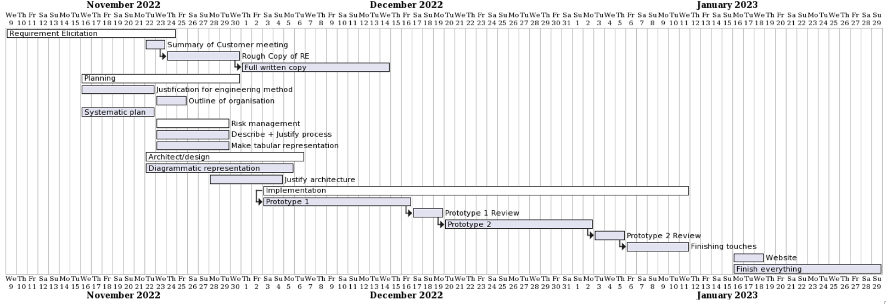
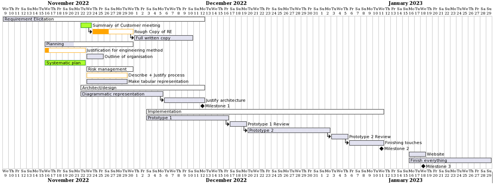
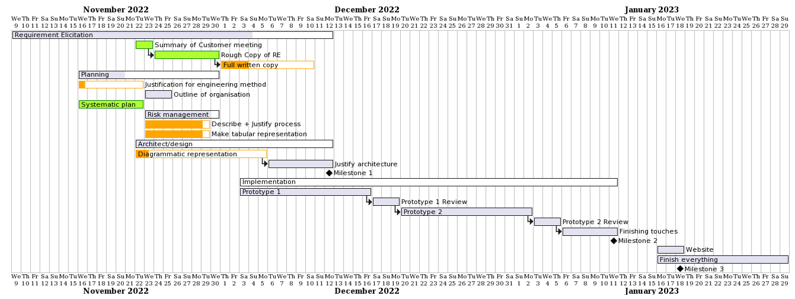
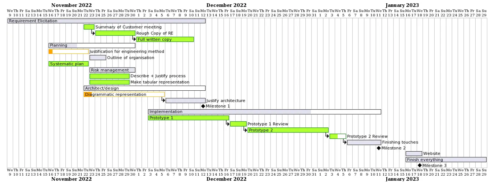
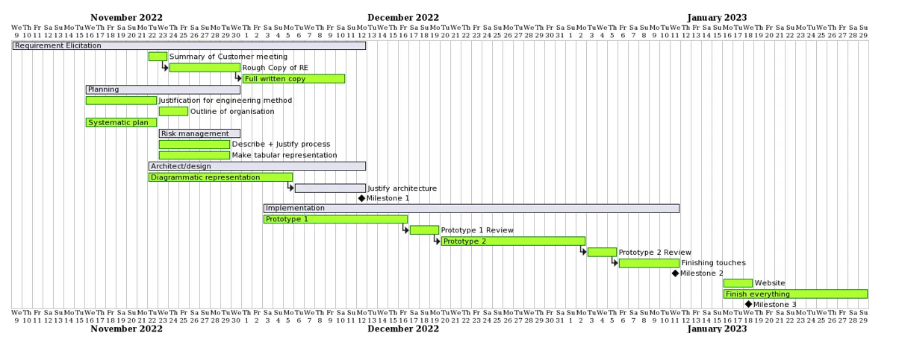

Piazza Panic is a cooking game made by Team Hard Cubans (THC) developped using the LibGDX Game Engine.
You can select between 3 different chefs using the "1", "2", and "3" keys to cook different dishes requested by customers.
Movement is done using the WASD and Arrow keys.
You have 4 different stations where the cooking is done.
insert more content here.
Initial Snapshot
Snapshot 2 (22/11/2022)
Snapshot 3 (07/12/2022)
Snapshot 4 (18/01/2023)
Final Snapshot (27/01/2023)
